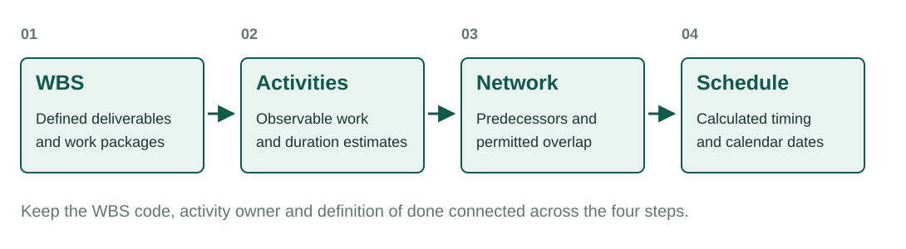
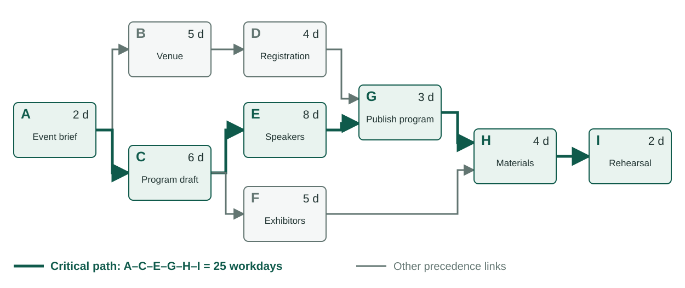
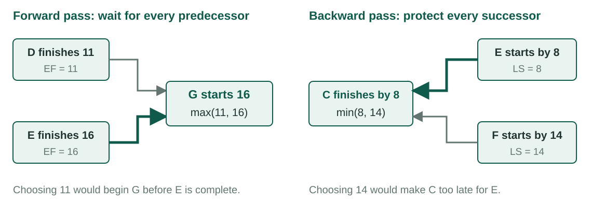
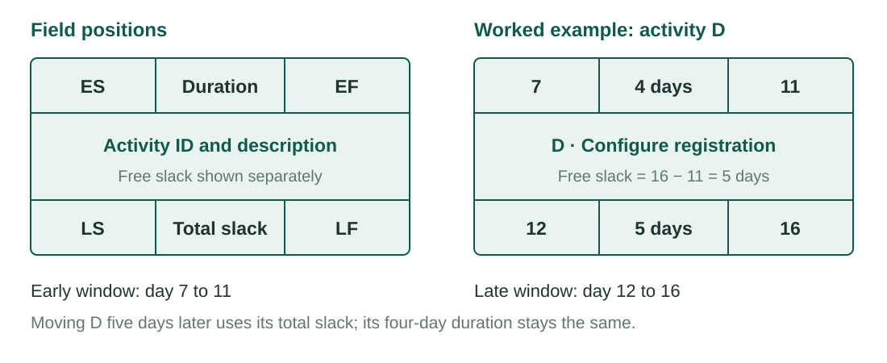
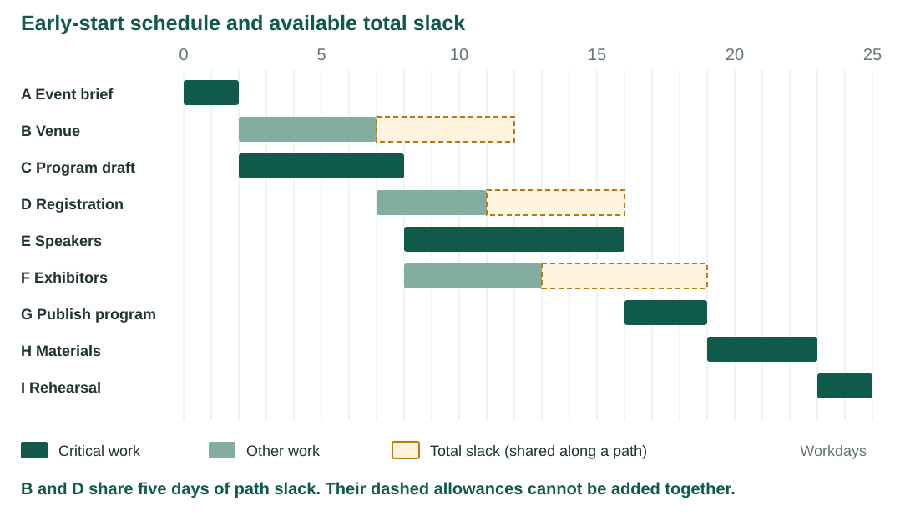
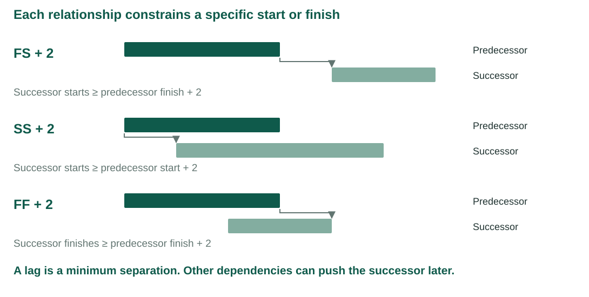
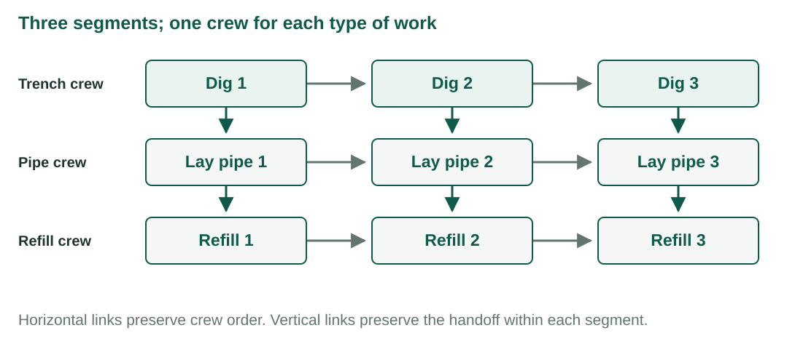

Week 6 · Developing a Project Schedule
Recording — posts after the session.
The project network turns a list of work into a time-based plan.
Source. This week’s notes follow Larson & Gray, Project Management: The Managerial Process, 2024 Release, McGraw Hill, Chapter 6 [1]. The exposition is reworded, and the conference example is constructed for this course.
Learning objectives
| LO 6-1 | Explain how work packages from the WBS become activities in a project network. |
| LO 6-2 | Construct and interpret an activity-on-node network. |
| LO 6-3 | Calculate early start, early finish, late start, late finish and slack. |
| LO 6-4 | Identify the critical path and explain why it requires active management. |
| LO 6-5 | Distinguish total slack from free slack. |
| LO 6-6 | Use lags and extended relationships to model realistic overlap and waiting. |
Concepts introduced
project networkactivity-on-nodeprecedenceparallel activityburst activitymerge activitypathforward passbackward passearly startearly finishlate startlate finishcritical pathtotal slackfree slackfinish-to-startstart-to-startfinish-to-finishlagladderinghammock activity
LO 6-1 · The network adds sequence to the WBS
Following Larson & Gray, Ch. 6 [1].
The WBS defines what the project must deliver. Its work packages have scope, ownership, resource needs and estimates. The WBS does not show the order in which that work must occur.

A schedule is a model of how the project can be completed. Its dates are consequences of the activity durations, dependencies and calendar entered into that model. A desired completion date is a target to test against the model; entering the target does not establish that the work can fit.
The project network adds three kinds of schedule information.
| Network information | Question answered |
|---|---|
| Dependency | What must happen before this activity can start or finish? |
| Sequence | In what logical order will the work proceed? |
| Timing | When can each activity start and finish, and how much delay can it absorb? |
A network activity consumes time. It may represent productive work, such as configuring a registration system, or waiting, such as allowing a permit review to finish. One activity can contain one work package or combine several closely related packages.
Work packages, activities and milestones
The relationship between a work package and an activity need not be one-to-one. A work package can require several activities when separate handoffs or approvals matter. Several small work packages can be represented by one activity when they share an owner and their internal sequence does not affect the rest of the project. Preserve traceability to the WBS in either case.
| Planning element | What it describes | Conference example | Scheduling implication |
|---|---|---|---|
| Work package | A bounded part of project scope | Registration capability | Defines the result and accountability |
| Activity | Work or waiting that consumes time | Configure registration | Has a duration and predecessors |
| Milestone | A significant event with zero duration | Registration opens | Marks a result or decision; contains no work duration |
| Dependency | A required relationship between activities | Venue agreement before registration setup | Restricts a start or finish |
| Resource assignment | Who or what performs the work | One analyst configures the system | May limit which activities can actually run together |
An activity description should make completion observable. Configure registration is more useful than registration because the verb names the work. Its definition of done might require a working registration form, tested payment processing and an approved confirmation email.
For each dependency, record the reason. Some are technically required, some come from an external party, and some reflect a preferred working method. A preference may be changed to accelerate a schedule; a technical requirement usually needs a change in the work itself.
Continuity matters
The people who defined the work packages should participate in building the network. A handoff to a separate scheduling group can create two failures.
- The scheduler may invent activities that do not match the defined deliverables.
- The project team may omit dependencies that were obvious to the people who decomposed the work.
A deliverable-oriented WBS makes the connection easier. Each work package has a defined result, and the network asks what must precede that result and what can follow it.
What a useful network provides
- an estimate of project duration based on the work rather than a preferred date;
- earliest and latest activity times;
- a basis for scheduling people and equipment;
- visibility into activities that cannot slip without affecting the finish;
- a basis for cash-flow timing and schedule control; and
- a structure that can be revised when conditions change.
The network does not make uncertainty disappear. It makes the logic visible enough to test.
Assumptions behind the first CPM calculation
The critical path method (CPM) calculates timing for a specified set of durations and relationships. Our initial model uses the assumptions below. These assumptions explain what the result means and when it must be revised.
| Assumption | Meaning in this chapter’s example | If the assumption fails |
|---|---|---|
| Fixed durations for this calculation | Each activity has one stated workday duration | Recalculate after estimates or remaining durations change |
| Finish-to-start, zero lag | Every immediate predecessor finishes before its successor starts | Apply the specific start/finish constraint and lag |
| Resources are available | Parallel work is feasible whenever the logic permits it | Resolve resource conflicts before promising dates |
| One common work calendar | All durations use the same unit and working periods | Convert calendars carefully; calendar days and workdays differ |
| No imposed early deadline | The backward pass starts at the earliest project finish | A separate deadline can produce positive or negative total slack |
For example, B and C may be logically parallel after A. If the same person must do both full time, they cannot run together as drawn. The unconstrained network provides a starting point for resource scheduling, not proof that staffing is sufficient.
A complete WBS with no schedule
The conference team has approved work packages for the venue, program, speakers, registration, exhibitor materials and rehearsal. Each package has an owner and duration estimate. The sponsor asks for the opening date.
What information is still missing before the team can defend a completion date?
LO 6-2 · Activity-on-node networks
Following Larson & Gray, Ch. 6 [1].
In an activity-on-node network, each activity appears as a node. Lines between nodes show precedence and flow. The line does not consume time under the basic finish-to-start model.
Network vocabulary
| Term | Meaning |
|---|---|
| Activity | A project element that consumes time. Descriptions normally use a verb and noun. |
| Parallel activities | Activities that may occur at the same time. The manager may still schedule them at different times. |
| Burst activity | An activity with more than one immediate successor. |
| Merge activity | An activity with more than one immediate predecessor. |
| Path | A connected sequence of dependent activities. |
| Critical path | The longest-duration path through the network under the current logic and durations. |
Eight construction rules
- Draw the network from left to right.
- Do not start an activity until all connected predecessors have finished under the basic finish-to-start model.
- Use lines to show precedence and flow. Lines may cross when necessary.
- Give every activity a unique identifier.
- Use identifiers that increase after their predecessors when the numbering system supports that convention.
- Do not create loops. A valid schedule cannot cycle back to an earlier activity.
- Do not place conditional branches such as “if approved” inside the deterministic network.
- Use one project start and one project finish when multiple starts or finishes would obscure the boundary.
Conditional outcomes belong in risk analysis, decision trees or separate scenarios. The project network represents one defined plan.
Conference launch network
The course example uses nine activities.
| ID | Activity | Immediate predecessor(s) | Duration, days |
|---|---|---|---|
| A | Approve event brief | — | 2 |
| B | Contract venue | A | 5 |
| C | Draft program | A | 6 |
| D | Configure registration | B | 4 |
| E | Confirm speakers | C | 8 |
| F | Recruit exhibitors | C | 5 |
| G | Publish program | D, E | 3 |
| H | Prepare on-site materials | F, G | 4 |
| I | Complete rehearsal | H | 2 |

The drawing shows precedence, not elapsed time. A long arrow does not mean a long delay, and the horizontal location of a node does not by itself establish its start date. Read the activity durations and dependency links before interpreting the geometry.
Activity A is a burst because B and C follow it. Activity G is a merge because D and E must both finish before G can begin. Activity H is another merge because it waits for F and G.
Activity C is also a burst. An activity can be both a merge and a burst in a larger network. These terms describe the count of immediate incoming and outgoing links; they do not identify whether the activity is critical.
Immediate predecessors and complete paths
An immediate predecessor connects directly to an activity. Earlier activities farther back on the same chain are predecessors too, but their effects already flow through the immediate links. G lists D and E. It need not also list A, B and C because the network already carries those requirements forward.
| Check | Application to the conference network | Error it prevents |
|---|---|---|
| Read every incoming arrow | G needs both D and E | Starting after only one required input arrives |
| Follow one connected route at a time | A–C–F–H–I is a complete path | Adding activities from unrelated parallel branches |
| Include a common completion point | All work reaches I | Leaving an unfinished branch outside the project finish |
| Separate logic from resources | B and C can overlap only if capacity permits | Treating parallel eligibility as guaranteed availability |
| Explain every dependency | G needs registration ready and speakers confirmed | Entering arbitrary predecessor numbers to force preferred dates |
The missing predecessor
The team originally connected G only to E. The software then allowed the program to publish before registration was configured.
Why can a schedule calculate correctly and still represent the wrong project?
LO 6-3 · Forward and backward passes
Following Larson & Gray, Ch. 6 [1].
Once the activities, logic and durations are in place, two passes calculate the schedule.
Time zero and the four activity times
We measure elapsed working time from zero. An activity with ES = 0 and duration 2 occupies the interval from time 0 to time 2. Its EF is 2. A successor can start at time 2 without adding another day. Do not mix this convention with a calendar display that labels the first workday as day 1 and displays inclusive start and end dates.
| Symbol | Name | Question it answers |
|---|---|---|
| D | Duration | How much working time does the activity require? |
| ES | Early start | What is its earliest feasible start under the network logic? |
| EF | Early finish | When would it finish if it starts at ES? |
| LS | Late start | How late can it start while preserving the chosen project finish? |
| LF | Late finish | How late can it finish while preserving the chosen project finish? |
Early and late dates are feasible timing limits under the model. They are not two different estimates of activity duration. Both windows must have the same length: EF − ES = LF − LS = D.
Forward pass: earliest times
The forward pass begins at time zero and moves from predecessors to successors.
For an activity with one predecessor:
\[ EF=ES+D \]
For a merge activity:
\[ ES=\max(EF_1,EF_2,\ldots,EF_n) \]
The largest predecessor early finish controls the merge because every required predecessor must be complete.
Work through the network in precedence order. Start A at zero, add its duration, and pass its EF to B and C. Continue only when the early finishes of all predecessors of the next activity are known. At a merge, write the candidate values before choosing the largest; this makes a missing predecessor easier to detect.
Conference forward pass
| ID | Predecessor EF values | ES | Duration | EF |
|---|---|---|---|---|
| A | project start | 0 | 2 | 2 |
| B | A = 2 | 2 | 5 | 7 |
| C | A = 2 | 2 | 6 | 8 |
| D | B = 7 | 7 | 4 | 11 |
| E | C = 8 | 8 | 8 | 16 |
| F | C = 8 | 8 | 5 | 13 |
| G | D = 11, E = 16 | 16 | 3 | 19 |
| H | F = 13, G = 19 | 19 | 4 | 23 |
| I | H = 23 | 23 | 2 | 25 |
The earliest project finish is day 25. At G, activity E controls the early start because 16 is later than D’s early finish of 11. At H, G controls because 19 is later than F’s early finish of 13.
Why the merge cannot use the smaller value
If G started at D’s EF of 11, E would still need five days to finish. The plan would violate the dependency from E to G. Choosing 16 satisfies both requirements: G starts after D is complete and after E is complete. Its own duration then gives EF(G) = 16 + 3 = 19.
The wait between D finishing at 11 and G starting at 16 is created by the other branch. It is not an extra five-day duration entered into D or a required five-day lag on D→G.
Backward pass: latest times
The backward pass begins at the project finish and moves from successors to predecessors. When no separate deadline has been imposed, set the final activity’s late finish equal to its early finish.
\[ LS=LF-D \]
When an activity has more than one immediate successor:
\[ LF=\min(LS_1,LS_2,\ldots,LS_n) \]
The smallest successor late start controls because the activity must finish in time for every required successor.
Conference backward pass
| ID | Successor LS values | LF | Duration | LS |
|---|---|---|---|---|
| I | project finish = 25 | 25 | 2 | 23 |
| H | I = 23 | 23 | 4 | 19 |
| G | H = 19 | 19 | 3 | 16 |
| F | H = 19 | 19 | 5 | 14 |
| E | G = 16 | 16 | 8 | 8 |
| D | G = 16 | 16 | 4 | 12 |
| C | E = 8, F = 14 | 8 | 6 | 2 |
| B | D = 12 | 12 | 5 | 7 |
| A | B = 7, C = 2 | 2 | 2 | 0 |
At C, the smaller successor late start controls. C must finish by day 8 for E even though F could wait until day 14.
If C finished at day 14, E could not start at its LS of 8. The backward pass therefore chooses LF(C) = min(8, 14) = 8, then subtracts C’s duration: LS(C) = 8 − 6 = 2. This protects both successor commitments.

A compact activity record
Node layouts vary by textbook and software. Use the labels to distinguish timing limits, duration and slack.

The values matter more than the box design. A project manager should be able to reconstruct each value from the network logic.
Arithmetic and logic checks
| Check | Expected result in the baseline | What a failure suggests |
|---|---|---|
| EF − ES and LF − LS | Both equal the duration | Mixed time conventions or a subtraction error |
| ES of a successor | At least every predecessor EF | A missed dependency or incorrect merge rule |
| LF of a predecessor | No later than every successor LS | An incorrect backward-pass rule |
| LS − ES and LF − EF | Equal total slack values | Inconsistent early or late dates |
| Longest complete path | Equals the project duration of 25 | An omitted branch or a path-summing error |
These checks test the basic finish-to-start model. When lags or other relationships are present, substitute the appropriate relationship constraint for the simple predecessor EF comparison.
LO 6-4 · The critical path
Following Larson & Gray, Ch. 6 [1].
The critical path is the longest-duration path through the network. When the project finish and the final activity’s late finish are equal, activities on the critical path normally have zero total slack.
| Complete path | Duration, days |
|---|---|
| A – B – D – G – H – I | 20 |
| A – C – E – G – H – I | 25 |
| A – C – F – H – I | 19 |
The critical path is A – C – E – G – H – I. A one-day delay on this path delays the planned finish by one day unless the team recovers time elsewhere on the path.
Why the critical path needs active management
- Critical activities have no schedule reserve under the current plan.
- A duration or dependency change can create a different critical path.
- More than one path can be critical.
- A nearly critical path can become controlling after a small delay.
- Compression efforts must shorten the controlling path to shorten the project.
The critical path does not identify the most expensive, difficult or strategically important work. It identifies the sequence currently controlling project duration.
Why the longest path sets the finish
Every complete path must finish before the project is complete. The 20-day venue path and the 19-day exhibitor path can finish within a 25-day plan because they overlap with work on the 25-day program path. Adding all nine activity durations gives 39 days of activity time, but much of that work can occur in parallel. The project duration is therefore 25 workdays under the stated resource assumptions.
Shortening a noncritical activity does not necessarily shorten the project. Reducing B by two days makes registration ready sooner, but G still waits for speakers. Reducing E by two days moves the program branch to 23 days and shortens the project to 23 because it remains longer than the 20-day venue and 19-day exhibitor branches.
The path that was not critical
The venue branch looks prominent because the contract is expensive and registration depends on it. Its path lasts 20 days, five days less than the controlling path.
If activity D takes three extra days, it finishes on day 14 instead of day 11. G still waits until day 16 for E. The project finish remains day 25.
If activity E takes three extra days, G starts on day 19 and the project finishes on day 28. The same delay produces a different project effect because E sits on the critical path.
A new critical path can emerge
The critical path is a result to recalculate, not a permanent label attached to activities. The following separate scenarios all start from the original network.
| Change from baseline | Venue path | Program path | Exhibitor path | Project duration | Interpretation |
|---|---|---|---|---|---|
| No change | 20 | 25 | 19 | 25 | Program path controls |
| D grows by 3 days | 23 | 25 | 19 | 25 | Venue branch uses three days of slack |
| D grows by 5 days | 25 | 25 | 19 | 25 | Venue and program paths are both critical |
| D grows by 6 days | 26 | 25 | 19 | 26 | Venue path becomes controlling |
| E shrinks by 6 days | 20 | 19 | 19 | 20 | Venue path limits the benefit of compression |
All values are workdays. A tie creates multiple critical paths. At that point, shortening only one tied path leaves the other path controlling the finish. This is why schedule compression requires repeated recalculation.
A schedule risk discussion needs both probability and network position. A likely delay on a flexible activity can be less urgent than a smaller delay on a critical or nearly critical activity.
LO 6-5 · Total slack and free slack
Following Larson & Gray, Ch. 6 [1].
Total slack
Total slack is the amount of time an activity can be delayed without delaying the project finish or an imposed completion date.
\[ TS=LS-ES=LF-EF \]
| ID | ES | EF | LS | LF | Total slack |
|---|---|---|---|---|---|
| A | 0 | 2 | 0 | 2 | 0 |
| B | 2 | 7 | 7 | 12 | 5 |
| C | 2 | 8 | 2 | 8 | 0 |
| D | 7 | 11 | 12 | 16 | 5 |
| E | 8 | 16 | 8 | 16 | 0 |
| F | 8 | 13 | 14 | 19 | 6 |
| G | 16 | 19 | 16 | 19 | 0 |
| H | 19 | 23 | 19 | 23 | 0 |
| I | 23 | 25 | 23 | 25 | 0 |
Total slack belongs to a path, not to each activity as an independent allowance. If B uses three days of slack, D’s remaining slack falls from five days to two. Managers of downstream activities need to coordinate its use.

The chart places activities on a working-time axis. It complements the AON network: the network makes precedence visible, while the chart makes overlap and waiting visible. The dashed areas are flexibility, not extra work.
Free slack
Free slack is the amount of time an activity can be delayed without delaying the early start of any immediate successor.
For finish-to-start relationships with zero lag:
\[ FS=\min(ES_{successors})-EF \]
In a feasible earliest-start schedule with these relationships, free slack is nonnegative: no successor starts before its predecessor finishes. It often appears at the end of a noncontrolling branch before a merge. For the terminal activity I, use a zero-duration project-finish milestone at time 25 as the successor; its free slack is zero.
| Activity | Total slack | Free slack | Interpretation |
|---|---|---|---|
| B | 5 | 0 | Delaying B immediately delays D, even when the project finish remains unchanged. |
| D | 5 | 5 | D can finish five days later before G’s early start moves. |
| F | 6 | 6 | F can finish six days later before H’s early start moves. |
Free slack is operationally useful because it can be used without rescheduling an immediate successor. Total slack may still require coordination across the rest of the path.
Comparing the two kinds of slack
| Feature | Total slack | Free slack |
|---|---|---|
| What is protected? | The project finish used in the backward pass | Every immediate successor’s early start |
| Baseline calculation | LS − ES, or LF − EF | Smallest successor ES − EF |
| What can change when it is used? | Downstream activity dates may move | Immediate successors retain their early starts |
| Who needs to coordinate? | Owners of affected activities along the path | Usually the activity owner, with resource and risk checks |
| Example B | Five days of total slack | Zero free slack because D starts at B’s EF |
| Example D | Five days of total slack | Five days of free slack before G begins |
Suppose B’s start is postponed by three days. B then occupies days 5–10, and D occupies days 10–14. G can still start at 16. Only two days of flexibility remain on that branch. Giving D a separate five-day allowance would count the same reserve twice.
Deadlines and negative total slack
Zero total slack identifies the baseline critical activities because the backward pass uses the earliest finish of 25. A different required finish changes the late dates without changing the earliest dates.
| Backward-pass finish | Total slack on A–C–E–G–H–I | Meaning |
|---|---|---|
| 28 | +3 | The longest path has three days before the required finish |
| 25 | 0 | The required finish matches the earliest feasible finish |
| 23 | −2 | The present plan misses the requirement by two workdays |
Negative total slack indicates a schedule conflict that requires action: recover duration, change feasible logic, revise scope, or negotiate the deadline. It is not additional time available to use. With constraints or deadlines, inspect the controlling logic and the software’s criticality definition instead of relying only on a zero-slack filter.
LO 6-6 · Lags and extended relationships
Following Larson & Gray, Ch. 6 [1].
The basic network uses a finish-to-start relationship: the successor starts after the predecessor finishes. Real projects sometimes need overlap or waiting that this relationship cannot express cleanly.
A lag is the minimum amount of time between specified points in two related activities. A lag models a constraint or overlap. It is not hidden work.
Common relationships
| Relationship | Meaning | Example |
|---|---|---|
| Finish-to-start with lag | The successor starts a defined time after the predecessor finishes. | Remove concrete forms two days after the pour finishes. |
| Start-to-start with lag | The successor starts a defined time after the predecessor starts. | Begin speaker invitations two days after program drafting starts. |
| Finish-to-finish with lag | The successor cannot finish until a defined time after the predecessor finishes. | Complete final documentation two days after system testing finishes. |

Calculating with a lag
Let activity i be the predecessor, j the successor, and L the lag. These are minimum-time constraints, so the successor can be scheduled later when another dependency controls.
| Relationship | Forward-pass requirement | Equivalent bound on successor ES | Backward-pass requirement |
|---|---|---|---|
| FS + L | ES(j) ≥ EF(i) + L | EF(i) + L | LF(i) ≤ LS(j) − L |
| SS + L | ES(j) ≥ ES(i) + L | ES(i) + L | LS(i) ≤ LS(j) − L |
| FF + L | EF(j) ≥ EF(i) + L | EF(i) + L − D(j) | LF(i) ≤ LF(j) − L |
Evaluate every applicable bound. In the forward pass, choose the largest candidate start. In the backward pass, choose the tightest permitted late time, translating between start and finish with the activity duration. Also honor project-start, calendar and any other scheduling constraints.
For the conference proposal, C has ES = 2 and duration 6. If the C→E relationship changes from FS to SS + 2, that link permits E to start at 2 + 2 = 4 instead of 8. E’s eight-day duration would put its EF at 12. Whether the overlap is credible depends on what C has produced by day 4, not on the notation alone. The rest of the network must then be recalculated.
A finish constraint can control even when a start constraint is satisfied. Suppose coding starts at 0 and finishes at 10. Debugging lasts 4 days, must start at least 2 days after coding starts, and must finish at least 1 day after coding finishes. SS + 2 gives a candidate ES of 2. FF + 1 requires EF ≥ 11, hence ES ≥ 11 − 4 = 7. The combined earliest debugging window is 7–11. Using only SS would incorrectly allow debugging to finish before the full code is ready.
Laddering
Long activities can sometimes overlap in repeated segments. A pipeline crew can dig one section, lay pipe in that section and begin refill while digging continues elsewhere. Splitting the work into segments creates a ladder-shaped network.
Laddering exposes the repeated handoffs. A start-to-start lag can represent the same overlap with less network detail when the relationship is stable and well understood.

If every box in this illustration takes two days and the three crews are independent, the ladder finishes in 10 days. Digging segment 2 can overlap with laying pipe in segment 1. Treating the entire pipeline as three sequential six-day activities would require 18 days. The eight-day reduction comes from a feasible change in overlap, not from assuming that individual tasks take less time.
Laddering is especially useful when intermediate handoffs must be tracked. A simpler SS relationship may be enough when production rates and the separation between crews stay stable. If crews catch up, segment quality varies or rework interrupts the flow, explicit segments make those conditions easier to manage.
Use lags carefully
- State the relationship type and lag value.
- Keep actual work as an activity with an owner, duration and cost.
- Do not use a lag to hide procurement, review or testing work.
- Recheck both forward and backward passes because the constraint can control a start or finish.
- Confirm that the overlap is technically feasible and does not create rework.
Hammock activities
A hammock activity spans a segment of the network. Its duration is determined by the scheduled start of the first activity and finish of the last activity in that segment. Project management support, site security and equipment rental can be modeled this way when their cost depends on the time spanned.
For example, support that begins with C at time 2 and ends with H at time 23 spans 21 workdays in the baseline. That duration is derived from the two anchor dates. If the network changes, the hammock duration changes too. It is not an additional sequential task that should be added to a path’s duration.
Common mistakes and how to catch them
| Mistake | Consequence | Correction |
|---|---|---|
| Add every activity duration | Double-count parallel time | Trace complete dependency paths |
| Use the smallest EF at a merge | Start before a required input exists | Take the largest predecessor EF |
| Use the largest LS in the backward pass | Miss an earlier successor commitment | Take the smallest successor LS |
| Add one to EF at each handoff | Insert unplanned time between activities | Use one consistent elapsed-time convention |
| Give each branch activity its own slack reserve | Spend shared slack more than once | Recalculate after any use of path slack |
| Treat SS as a finish guarantee | Permit work to finish before a required final input | Add the justified finish constraint where needed |
| Replace managed work with lag | Hide responsibility and progress | Keep observable work as an activity |
| Trust matching software dates | Overlook a logically incomplete model | Audit predecessors and definitions of done |
A practical schedule review
Read the work definitions first, then trace the links, and only then evaluate the dates. Confirm which calendars apply and whether parallel work has the necessary resources. Identify the longest and nearly longest paths, explain the slack available to each branch, and record which changes would make another path controlling. After a duration, dependency or progress update, rerun the calculations before promising a revised finish.
Thursday studio
Studio 6 · Build and audit a CPM schedule
Complete the Week 6 studio.
You will draw the conference network, calculate the forward and backward passes, identify total and free slack, and then use Smartsheet to audit the result.
The manual calculation comes first. Software can detect arithmetic differences. It cannot decide whether a missing dependency represents the project correctly.
Sources
- Larson, E. W., & Gray, C. F. Project Management: The Managerial Process, 2024 Release. McGraw Hill. Chapter 6.
The conference activity names, durations and calculations are original to these course materials.